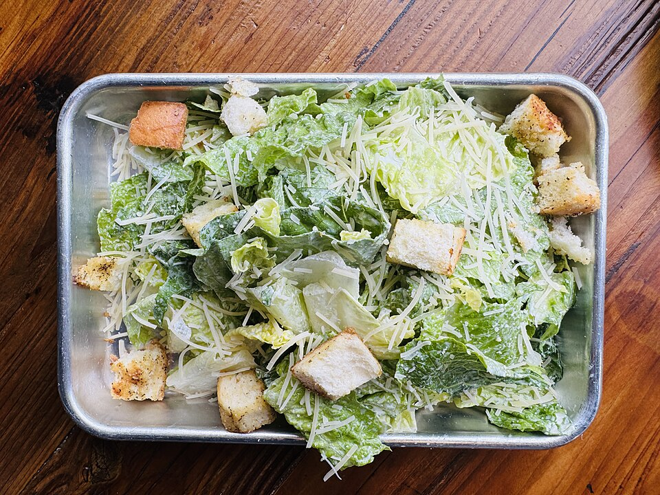

Home
Ceasar Salad

Description
Caesar salad is a crisp, refreshing salad known for its creamy, tangy dressing made with anchovies, garlic, lemon
juice,
and Parmesan cheese. Traditionally served with crunchy croutons and romaine lettuce, it's a staple in
restaurants and
easy to make at home. You can also top it with grilled chicken or shrimp for a heartier meal.
Ingredients
- 1 large head of romaine lettuce, chopped
- 1 cup croutons (store-bought or homemade)
- 1/4 cup shaved or grated Parmesan cheese
- 1 egg yolk (or 1 tbsp mayonnaise for no-raw-egg version)
- 1 tsp Dijon mustard
- 1-2 anchovy fillets (or 1 tsp anchovy paste)
- 1 garlic clove, minced
- 2 tbsp fresh lemon juice
- 1/3 cup olive oil
- 1/4 cup grated Parmesan cheese
- Salt and black pepper to taste
- Optional: 1/2 tsp Worcestershire sauce
Steps
- In a bowl or blender, combine egg yolk, mustard, anchovies, garlic, lemon juice, and Worcestershire sauce
(if using)
.
- Slowly drizzle in olive oil while whisking or blending until emulsified. Stir in grated Parmesan. Season
with salt and pepper to taste.
- Wash and dry the romaine lettuce thoroughly. Tear or chop it into bite-sized pieces.
- In a large bowl, toss the lettuce with the dressing until evenly coated.
- Add croutons and Parmesan, and toss again.
- Plate the salad, top with extra Parmesan or protein (like grilled chicken), and serve immediately.